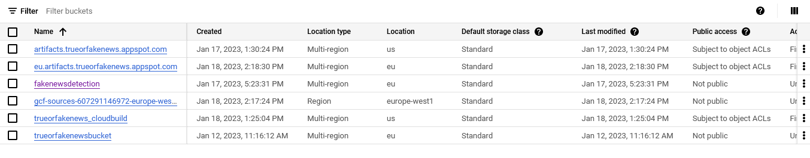
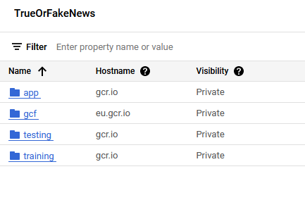

{kind=link}
{kind=link}
{kind=link}
{kind=link}

This is the report template for the exam. Please only remove the text formatted as with three dashes in front and behind like:
--- question 1 fill here ---
where you instead should add your answers. Any other changes may have unwanted consequences when your report is auto
generated in the end of the course. For questions where you are asked to include images, start by adding the image to
the figures subfolder (please only use .png, .jpg or .jpeg) and then add the following code in your answer:
markdown

In addition to this markdown file, we also provide the report.py script that provides two utility functions:
Running:
bash
python report.py html
will generate an .html page of your report. After deadline for answering this template, we will autoscrape
everything in this reports folder and then use this utility to generate an .html page that will be your serve
as your final handin.
Running
bash
python report.py check
will check your answers in this template against the constrains listed for each question e.g. is your answer too short, too long, have you included an image when asked to.
For both functions to work it is important that you do not rename anything. The script have two dependencies that can
be installed with pip install click markdown.
Enter the group number you signed up on
Answer:
11
Enter the study number for each member in the group
Example:
sXXXXXX, sXXXXXX, sXXXXXX
Answer:
s203294, s204075, s200431, s204158
What framework did you choose to work with and did it help you complete the project?
Answer length: 100-200 words.
Example: We used the third-party framework ... in our project. We used functionality ... and functionality ... from the package to do ... and ... in our project.
Answer:
We chose to work with the open-source Transformers framework from the Hugging Face organization. We chose to do so, because the framework includes a number of pretrained models for text classification, which we planned to utilize to achieve the goal of the project. For this purpose, we chose the RoBERTa model, since it has been shown to perform well on a variety of NLP tasks. Moreover, since we chose the RoBERTa model, we also utilized the RobertaTokenizer in order to prepare the inputs for the model in the make_dataset.py file. Finally, we chose the Adam optimizer, also imported from the transformers framework, as the optimizer for training (fine tuning) the model.
In the following section we are interested in learning more about you local development environment.
Explain how you managed dependencies in your project? Explain the process a new team member would have to go through to get an exact copy of your environment.
Answer length: 100-200 words
Example: We used ... for managing our dependencies. The list of dependencies was auto-generated using ... . To get a complete copy of our development enviroment, one would have to run the following commands
Answer:
For dependency management, we used a requirements.txt file. This file includes all the manually added dependencies needed for the project as well as auto-generated dependencies found by the setuptools package "setup". To install the dependencies, one would run the command:
pip install -r requirements.txt
Furthermore, to run the unittests written for the project locally, one would run the command:
pip install -r requirements_tests.txt
In order to get a complete copy of the working environment that we have developed this project in, first clone the repository:
git clone https://github.com/magnusgp/FakeNewsDetection.git
Install all dependencies:
pip install -r requirements.txt
Then, make sure that you create the dataset properly, by using the Makefile
make data
This should create a file named processed.pt into the data/processed folder. If this file is now created, you are ready to go on and train the model.
We expect that you initialized your project using the cookiecutter template. Explain the overall structure of your code. Did you fill out every folder or only a subset?
Answer length: 100-200 words
Example: From the cookiecutter template we have filled out the ... , ... and ... folder. We have removed the ... folder because we did not use any ... in our project. We have added an ... folder that contains ... for running our experiments. Answer:
We held all of the folders generated by cookiecutter since we found them relevant. However, the ones we ended up filling were mainly src/data src/models and data. These folders contain all the source code for our data cleanup and generation as well as model training and evaluation. We ended up adding a lot of extra files to the root directory which are mostly .yaml files for configuring cloud runs as well as dockerfiles to build both the training image as well as the application image for deployment. It's worth noting that data is generated by a make file. We also added an ‘outputs’ folder which contains the hydra outputs with hyperparameters from our model runs.
Did you implement any rules for code quality and format? Additionally, explain with your own words why these concepts matters in larger projects.
Answer length: 50-100 words.
Answer:
We did not attempt to systematically standardize the code, however we did follow our intuition in writing aesthetically. We do however strongly believe in code quality, and the reason we did not emphasize it in our project is perhaps being in a rush to work with other important exercises. However, as one of the last parts of cleaning up our project ,we ran some code formatting on our essential files to make sure that they comply with good coding practices. In this regard we used the isort package as well as the black package.
In the following section we are interested in how version control was used in your project during development to corporate and increase the quality of your code.
How many tests did you implement?
Answer:
We implemented 7 tests in total covering the making of the dataset as well as the output of the model. We also made development tests to check if the user is running a version of python that is compliant with our project. These tests is implemented in order to make sure that the code is running as intended and that the code is not breaking when new features are added.
What is the total code coverage (in percentage) of your code? If you code had an code coverage of 100% (or close to), would you still trust it to be error free? Explain you reasoning.
Answer length: 100-200 words.
Example: The total code coverage of code is X%, which includes all our source code. We are far from 100% coverage of our code and even if we were then...*
Answer:
The total code coverage of code is 98% of our test files. We are far from 100% coverage on our source files. However, the tests in the test files indirectly test that the source files are correct. This is evident from the specific tests that we perform, since we for example test that the dataset has the desired size and shape as well as content. If it does not have this, we know that something went wrong in the process of creating it. We have not implemented any tests for the training itself, since we are using the Huggingface transformers framework. This framework is very low-code in itself and does not allow us to directly alter the training loop and therefore also not insert any testing inside the training loop itself. However, we are again testing the output of the model with our unittesting. \ Even if we had 100% coverage of all files, then we would not be certain that our code is error free, this is due to the fact that just because we test every line of code, it does not mean that it actually is working as it should. Also, tests are only as good as you make them, and you have to be really precise in what you want to test. You can for example always assert that an input is a string right after you have converted it to a string, but this kind of testing makes no sense to make even though it would cover more of the source code.
Did you workflow include using branches and pull requests? If yes, explain how. If not, explain how branches and pull request can help improve version control.
Answer length: 100-200 words.
Example: We made use of both branches and PRs in our project. In our group, each member had an branch that they worked on in addition to the main branch. To merge code we ...
Answer:
We utilized branches in our project – each member had a separate branch and different exercises they were assigned to finish. By doing so, we secured that as we coded our individual problems didn’t affect the other group members. Naturally, we had to use push and pull requests to update our individual branches, and finally merge to create the complete dictionary on the main branch. As with all projects which utilize git, we were met with a plethora of merge conflicts – to solve this, we used the VS code extension “Git Graph” to keep track of the development of the individual branches. This helped us understand the value which git holds (and hereby the usage of branches), and without it, we doubt a final project could have emerged.
Did you use DVC for managing data in your project? If yes, then how did it improve your project to have version control of your data. If no, explain a case where it would be beneficial to have version control of your data.
Answer length: 100-200 words.
Example: We did make use of DVC in the following way: ... . In the end it helped us in ... for controlling ... part of our pipeline
Answer:
We did use DVC to upload the data to the cloud, however we had a lot of problems with it, which was due to the fact that we used different accounts to get Gcloud running. In some of the experiments we uploaded the data manually so as to test if the models would train in the cloud. Essentially, we kept getting unknown errors when trying to pull the data from dvc and with very little logging from dvc, it was hard to actually resolve the issues. We got it working locally, however when we ran our models in the cloud as well as in cloud deployment, we ended up pulling data directly from our google cloud bucket assigned to the project.
Discuss you continues integration setup. What kind of CI are you running (unittesting, linting, etc.)? Do you test multiple operating systems, python version etc. Do you make use of caching? Feel free to insert a link to one of your github actions workflow.
Answer length: 200-300 words.
Example: We have organized our CI into 3 separate files: one for doing ..., one for running ... testing and one for running ... . In particular for our ..., we used ... .An example of a triggered workflow can be seen here:
Answer:
We have set up continuous integration for the unittesting of our code, meaning that the pytest package will run all tests inside the ‘tests’ directory everytime a push is made to the main branch. Furthermore, whenever a push is made with the push tag ‘building’, a docker image will be built in the Google Cloud container registry. The pytests make use of caching, as it would otherwise take a very long time to install all requirements needed to run the tests from requirements.txt. Besides the testing and the docker building, we have not been able to set up additional CI such as linting, which would have been preferred. We have tried formatting our code and making it flake8 compliant manually, which could be made into a CI workflow, but the timeframe for this project did not allow us to explore this.
We also set up so that whenever we make a push to the main branch, we automatically build the API in cloud run and deploy it immediately. This is done by using a GitHub webhook that automatically tells Cloud Run to build and deploy a new container from the app.Dockerfile. This ensures that we continuously build and integrate code changes into our deployed model.
In the following section we are interested in learning more about the experimental setup for running your code and especially the reproducibility of your experiments.
How did you configure experiments? Did you make use of config files? Explain with coding examples of how you would run a experiment.
Answer length: 50-100 words.
Example: We used a simple argparser, that worked in the following way: python my_script.py --lr 1e-3 --batch_size 25
Answer:
We had a single hydra file in src/models/config with a single experiment. The scripts can be executed using src/file_script/script_name. We configured the hyperparameters for the training run of the model so that we could access them later and document them. The project does however lack an argparser system, which we found redundant since we could set the hyperparameters with the hydra package.
Reproducibility of experiments are important. Related to the last question, how did you secure that no information is lost when running experiments and that your experiments are reproducible?
Answer length: 100-200 words.
Example: We made use of config files. Whenever an experiment is run the following happens: ... . To reproduce an experiment one would have to do ...
Answer:
When running our experiments, we made use of the hydra config file. Whenever we run an experiment, we would either change the hyperparameters in the default config file or add a new config file for a certain setting. Experiments are specified in the src/models/config/experiments folder, and in order to reproduce an experiment one should use the default experiment file. Experiments variables are then documented in the yaml files. To create a new experiment with a new run configuration, one would create a new run
Upload 1 to 3 screenshots that show the experiments that you have done in W&B (or another experiment tracking service of your choice). This may include loss graphs, logged images, hyperparameter sweeps etc. You can take inspiration from this figure. Explain what metrics you are tracking and why they are important.
Answer length: 200-300 words + 1 to 3 screenshots.
Example: As seen in the first image when have tracked ... and ... which both inform us about ... in our experiments. As seen in the second image we are also tracking ... and ...
Answer: We used Weights and biases to track both our training and test process (regarding the model). Additionally, the system was tracked - referring to process memory, disk utilization and network trafficking. In the first image, you can see the evaluation of our model.
This shows (see the light blue line) that our accuracy grew as our loss fell (quite naturally). Furthermore, we see that the accuracy is starting to flatten out, but the loss remains falling with a high rate - from this it becomes clear that further evaluation (with more epochs) could have been beneficial. On the second image the training loss is shown.
This shows a general tendency of decreasing loss, but it fluctuates quite a lot from step to step. The fluctuations could be decreased by using a larger batchsize. The last image shows an overview of the system which processed the training and evaluation of our model.
From this we can gather a general understanding of the power which it takes to run a deep learning model of our caliber. Although high fluctuations appear in the overview of the process memory, a general tendency shows the availability and memory in use (both in procent and MB).
Docker is an important tool for creating containerized applications. Explain how you used docker in your experiments? Include how you would run your docker images and include a link to one of your docker files.
Answer length: 100-200 words.
Example: For our project we developed several images: one for training, inference and deployment. For example to run the training docker image:
docker run trainer:latest lr=1e-3 batch_size=64. Link to docker file:Answer:
We have developed two docker files. The first one, training.Dockerfile, is used for training the model using the processed dataset (dataset.pt). When run, the model should train itself and output the saved checkpoints to the models/roberta-base directory. The other dockerfile, app.Dockerfile, is used for deployment and inference. This deployment can both work locally as well as in Google Cloud using the Cloud Run service with an automatic trigger or by manual upload.
To run the training docker image, one should run
docker run training:latest
To run the application image, one should run
docker run app:latest
The training dockerfile can be found here: a relative link
When running into bugs while trying to run your experiments, how did you perform debugging? Additionally, did you try to profile your code or do you think it is already perfect?
Answer length: 100-200 words.
Example: Debugging method was dependent on group member. Some just used ... and others used ... . We did a single profiling run of our main code at some point that showed ...
Answer:
Debugging method was dependent on group members. Some just used VS code's python debugger while others used Pycharms debugger. Debugging in both VS code and Pycharm was done to fully understand the current value of both models and data - in the process of loading data, the VS code debugger helped us understand both the shape, value and type of the data, which was a huge help when trying to rework and split the data into training and testing sets. Furthermore, we started with a csv-file and ended with a serialized pytorch model (dataset.pt), which needed a lot of debugging and reworking.
In the following section we would like to know more about your experience when developing in the cloud.
List all the GCP services that you made use of in your project and shortly explain what each service does?
Answer length: 50-200 words.
Example: We used the following two services: Engine and Bucket. Engine is used for... and Bucket is used for...
Answer:
Compute Engine: Here, we created virtual machine instances for computational purposes. We mainly used this for trying to run the training scripts as the transformer model was too large to run properly on our local pc’s. Vertex AI: Used for automatically setting up training jobs and executing them directly in the cloud using cloud resources. However, we used this very little and only experimentally as we had issues with our training docker files. The issues mainly rose from us not being able to accurately pull the dataset using dvc. Another issue here were, that two of the group members used an AMD chip, which caused the docker images to be non-compliant with the ARM-based system that Vertex AI runs on. Cloud storage: Used for storing larger files in the cloud. We used this for storing our processed dataset to make it available to use in our training as well as storing the trained model checkpoint. The model checkpoint would then be loading into cloud run for deployment Container registry: Used for storing the containers used in the project. Here, we had the built docker containers for running both the application as well as the container for training our model.
The backbone of GCP is the Compute engine. Explained how you made use of this service and what type of VMs you used?
Answer length: 50-100 words.
Example: We used the compute engine to run our ... . We used instances with the following hardware: ... and we started the using a custom container: ...
Answer:
We used the Compute Engine to try to run our training scripts. We used cpu-instances using our custom container image and pytorch pre-installed of the type ‘n1-standard-1’ and the CPU platform ‘Intel Haswell’. Unfortunately we lost our access to the project where we would run our training script after the 50 dollars was used. We did not train the models on the Compute Engine, but we know that it's possible. Instead we found a solution in letting the models run locally and then build a docker image from the local machine. We also tried to directly pull the repository from git inside a VM instance and run it from there, but it did not yield any results.
Insert 1-2 images of your GCP bucket, such that we can see what data you have stored in it. You can take inspiration from this figure.
Answer:

Upload one image of your GCP container registry, such that we can see the different images that you have stored. You can take inspiration from this figure.
Answer:

Upload one image of your GCP cloud build history, so we can see the history of the images that have been built in your project. You can take inspiration from this figure.
Answer:
Did you manage to deploy your model, either in locally or cloud? If not, describe why. If yes, describe how and preferably how you invoke your deployed service?
Answer length: 100-200 words.
Example: For deployment we wrapped our model into an application using ... . We first tried locally serving the model, which worked. Afterwards we deployed it in the cloud, using ... . To invoke the service an user would call
curl -X POST -F "file=@file.json"<weburl>Answer:
First, we deployed our model locally using FastAPI. This worked great and the API would guide the user to input a text prompt and then do inference based on that. Then, we tried to deploy it using google cloud, but we again ran into problems pulling the correct checkpoint for the inference model. Instead, we built the docker file locally and pushed it to the container registry, which then served as the image that the cloud run server ran. While the cloud run was successfully able to access our application from the image, we found out that it was the wrong image with the old API, which therefore did not include the guiding to the text prompt and we could not do inference using it, even though it should work.
\
To invoke the service locally, one would call this with a json file containing the input prompt:
curl -X 'POST' \
'http://127.0.0.1:8000/predict_if_fake_news/?text_message=@text_message.json’ \
-H 'accept: application/json' \
-d ''
In order to invoke the service served on cloud run, one would access the hyperlink https://app-lj4fkog2eq-ew.a.run.app or call:
curl -X 'POST' \
'https://app-lj4fkog2eq-ew.a.run.app
Did you manage to implement monitoring of your deployed model? If yes, explain how it works. If not, explain how monitoring would help the longevity of your application.
Answer length: 100-200 words.
Example: We did not manage to implement monitoring. We would like to have monitoring implemented such that over time we could measure ... and ... that would inform us about this ... behavior of our application.
Answer:
We used monitoring through the google cloud services. The alerting function was used to send an alert to a given mail of the log entries on the project. Further types of alerting or monitoring could have been added, but wasn't due to time limitations. We didn't utilize the Signoz package to visualize the telemetry data from our api, which could have been beneficial for a general overview. Additionally, input monitoring of the api could have been quite interesting (as this could be informative if an api was later used for a model which could be accessed by the general public). In general, further monitoring of the performance of the model deployed to our API could have been interesting - especially loss and accuracy.
How many credits did you end up using during the project and what service was most expensive?
Answer length: 25-100 words.
Example: Group member 1 used ..., Group member 2 used ..., in total ... credits was spend during development. The service costing the most was ... due to ...
Answer:
s204075 (Magnus) still has 100 dollars from his 350 dollar budget. s204158 (Arian) used all of his 50 dollars. A lot of the money spent was used on the old MLOps project from the exercises. In total, the Fake News Detection project used around 60 kr in credits, where storage and compute was the most expensive services. However, it is hard to know exactly what costs a lot since google cloud did not log expenses which were paid for by credits.
In the following section we would like you to think about the general structure of your project.
Include a figure that describes the overall architecture of your system and what services that you make use of. You can take inspiration from this figure. Additionally in your own words, explain the overall steps in figure.
Answer length: 200-400 words
Example: * The starting point of the diagram is our local setup, where we integrated ... and ... and ... into our code. Whenever we commit code and puch to github, it auto triggers ... and ... . From there the diagram shows ... Answer:
The starting point of the diagram is the user which can directly authenticate into the cloud, ssh into a given VM instance created earlier with an appropriate image family (such as pytorch), and train the model. The user can then follow their progress through weights and biases and retrieve the data from either the cloud or wandb. The user can also push their own code to github and the respective container to the cloud. This can be done the fast way using a trigger or manually. The trigger is implemented using a webhook directly in GitHub, that detects whenever a new push is made to the main branch. Then, the webhook pings the Google Cloud Run service, making it build a new docker image and then deploying it. Locally, theapp can be deployed directly without an image using uvicorn or using a Docker image. A new instance can then be created from the costum container so as to be used for training. When a training is done, its outputs will be monitored using wandb, making it easy to track training accuracy and evaluation loss. The trained model can be pulled back to the user again to be deployed localy.
Discuss the overall struggles of the project. Where did you spend most time and what did you do to overcome these challenges?
Answer length: 200-400 words.
Example: The biggest challenge in the project was using ... tool to do ... . The reason for this was ...
Answer:
Cloud computing was certainly a part of the project that took an overwhelming amount of time. We spent a lot of time trying to figure out why the docker build was failing and why we could not find the appropriate data anywhere. The costs also put an early stop to our project, when we could not access it anymore, forcing us to use another account and set it up again. \ We had so many issues with dvc, where it would remove our data from our local machines never to be seen again, forcing us to create and process the dataset again. \ Another issue was our inexperience with git. We had trouble with our branches, pull requests and merges as files would change, lose functionality or even disappear at some times, making us have to spend several hours to regain what was lost. \ We were also challenged with the different computer architectures within the group. Two of us were using Mac/Linux operating systems with the AMD-based chips and the others were using Windows operating systems with the ARM-based chips. This caused a lot of our internal files to be non-compliant and essentially ended up ruining a lot of our work on the docker files. These docker files also ended up being huge and took a very long time (>30 mins) to push to the cloud, making the deployment pipeline very slow.
State the individual contributions of each team member. This is required information from DTU, because we need to make sure all members contributed actively to the project
Answer length: 50-200 words.
Example: Student sXXXXXX was in charge of developing of setting up the initial cookie cutter project and developing of the docker containers for training our applications. Student sXXXXXX was in charge of training our models in the cloud and deploying them afterwards. All members contributed to code by...
Answer:
s204158 (Arian) worked with getting the scripts related to generating the data. He also attempted to get the model training on the gcloud using our costume container.
s203294 (Kasper) worked with unittesting of the model and data scripts, the original model (both training and testing), hydra configuration for loading and managing hyperparameters, code quality and formatting, data stability report from evidently and attempted fix of dvc.
s200431 (Benjamin) worked on weights and biases and that the original model (both training and testing(validating) was implemented in the git repository. Was in charge of monitoring on cloud (alerting), worked on the original API (the first shown with Fast API (local deployment for the model)), data drifting (evidently), distributed data loading (used when loading our data for training), data stability report (evidently). Also attempted a fix of dvc which sadly didn't succeed.
s204075 (Magnus) was in charge of using the transformer framework to train and validate the model as well as logging the results to wandb. He also worked on deploying the model locally as well as running cloud VM instances, container registries and cloud run/functions. He also created the dockerfiles and configuration files for the build and the final working version of the dataset cleaning and creation. He also set up the repository and the cookiecutter structure and found the dataset. He also created the storage bucket, the testing workflow in github and the trigger workflow for creating docker images in google cloud. Furthermore, he also contributed with hydra configuration in the training files and in the configuration of these. Was additionally in charge of the final API (with Fast API) which was deployed via the cloud (deployment of our trained model).
All members contributed to the report and general discussions about the code (fx debugging each other's code, etc.) and the project as a whole.
{kind=link}